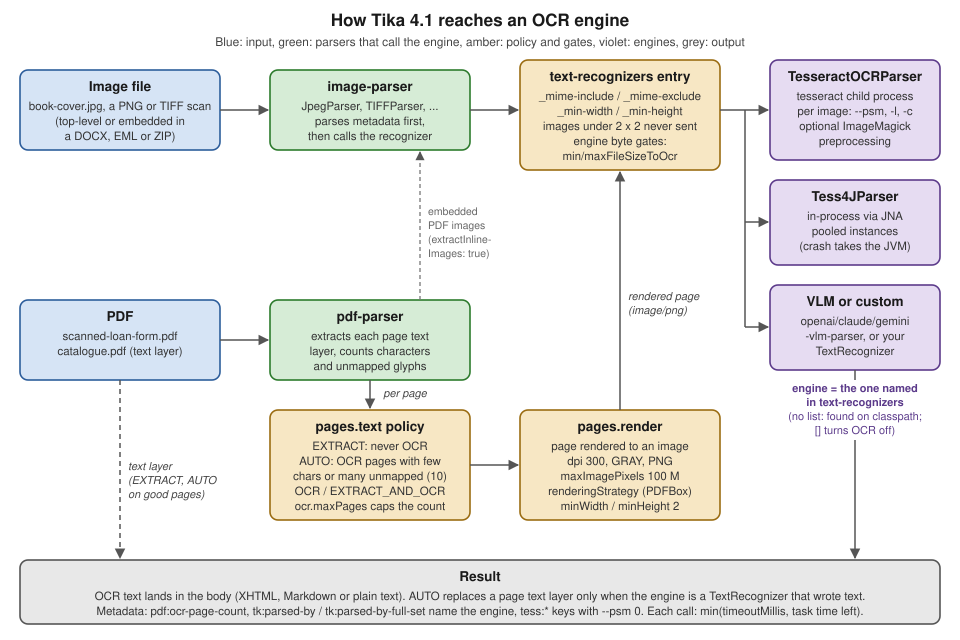

OCR with Tesseract
|
This content was generated with the assistance of AI and should be verified against the official documentation before being relied on in production. |
Baseline date: 2026-10-12. This page was written against Apache Tika 4.1.0 (the latest release on Maven Central on that
date) with the 3.3.x differences noted, Java 21 and later for the examples (Tika 4.x needs Java 17), Spring Boot 4.x on
Spring Framework 7 for the integration pages, and the Docker images apache/tika:4.1.0 and apache/tika:4.1.0-full.
Tika has no OCR engine of its own. It finds pixels that may hold text (an image file, a picture embedded in an Office
document or an email, a PDF page that has no usable text layer) and hands them to an external engine, by default the
open-source Tesseract program. This page explains when that is worth the cost, how to
install Tesseract and its language data (or take the -full image that ships it), every TesseractOCRParser option,
the text-recognizers list that 4.1 introduced to choose the engine, the in-process Tess4J alternative, how OCR of a
standalone image differs from OCR of a rendered PDF page, and how to keep OCR from eating the whole timeout budget.
Related pages: Configuration (the tika-config.json format and
TikaLoader), PDF Parsing (the PDF parser options and the per-page
decision in depth), VLM Parsers & Inference (vision-language
models as an OCR engine), Extending Tika (writing your own engine),
Setup & Installation (dependencies and the Docker tags) and
Supported Formats & Parser Families (why a missing
binary makes a parser silent).
How this page was checked: the option names, defaults and validation rules were read from the 4.1.0 and 3.3.2 sources
jars of tika-parser-ocr-module, the 4.1.0 sources jar of tika-parser-tess4j-module and the 3.3.2 sources of
tika-parser-pdf-module, and cross-checked against the 4.1.x documentation pages cited under each example. Tesseract
was not installed on the test machine for this page and no Tika image was available to Docker, so the programs below
were compiled and run against Tika 4.1.0 on Java 25 without an OCR engine: the outputs shown are the real ones for that
situation (config validation, engine-selection errors, the PDF OCR verdict). No Tesseract recognition output appears on
this page, and the section What was verified and what was not lists the rest.
When OCR is needed
A parser extracts text that a file stores as text. A scanner or a camera stores pictures, so a scanned contract, a photographed page or a book cover has no text for a parser to find. OCR is the step that turns those pixels back into characters. In the Bookshelf intake scenario:
| File | Without OCR | With OCR |
|---|---|---|
|
Metadata only. The text body is empty and the PDF parser records |
The loan form text (borrower, title, due date), recognised page by page. |
|
EXIF and image metadata from |
The title and author printed on the cover. |
|
The full text from the PDF text layer. |
Nothing better: OCR of a page that already has text only costs time. The default |
|
The document text; each picture becomes an embedded document with metadata only. |
Text inside the pictures too (a pasted screenshot, a signature stamp, a scanned attachment). |
|
Detection finds |
As for any PDF: OCR only on pages whose text layer is poor. |
Typical reasons to turn OCR on are scanned archives, faxes, mobile-phone photos of documents, image-only PDFs produced by "print to image" tools, and screenshots in tickets or emails. Typical reasons to keep it off are a corpus of born-digital documents, a latency budget measured in milliseconds, or an index where image text is noise (logos, decorative banners).
What OCR does not give you:
-
Layout. Tesseract returns lines of text, optionally with word boxes in hOCR. Tika does not rebuild columns, reading order across complex layouts or tables from that output. For layout-aware extraction see the escalation advice in Document Parsing for RAG.
-
Certainty. Recognition quality depends on the scan resolution, skew, noise, fonts and the language model. Expect errors on low-quality input and check them (the junk-detection and text-quality signals described in Character Encoding Detection help to flag bad output).
-
Handwriting. The standard Tesseract models target printed text. Handwritten fields on the loan form are, at best, partly recognised. A vision-language model (see VLM Parsers & Inference) is the usual alternative.
The cost is real. One page at 300 dpi typically takes from a fraction of a second to several seconds of CPU in Tesseract,
far more than the text extraction of a born-digital page. The source of TesseractOCRParser logs a one-time INFO line
the first time it runs, reminding that Tesseract "can add greatly to processing time".
How OCR fits into Tika 4.1

The picture above is the whole design in one view:
-
A container parser meets pixels.
image-parser(the JPEG, PNG, TIFF, BMP and GIF parsers) parses an image file or an embedded image for its metadata.pdf-parserextracts each page text layer and, when its page policy says so, renders the page to an image. The EMF and WMF parsers render their drawing the same way. -
That parser asks for a text recognizer. A text recognizer is an engine that produces a document’s text from its pixels. It implements
org.apache.tika.parser.enricher.TextRecognizer(which extendsContentEnricher) and advertises the real media types it reads, such asimage/png. The parser that met the pixels calls the engine. The engine is never chosen byAutoDetectParseras the parser for the file. -
The engine is the one named in the top-level
text-recognizerslist. With no list, the loader finds one among the loaded parsers (Tesseract, when its binary is on thePATH). An empty list turns OCR off everywhere. -
Gates decide whether a given image reaches the engine: the entry filters (
_mime-include,_mime-exclude,_min-width,_min-height), a fixed floor that never sends an image under 2 x 2 pixels, and the engine own byte limits (minFileSizeToOcr,maxFileSizeToOcr). -
The engine output lands inline in the body of the caller’s document (XHTML, Markdown or plain text, depending on the handler). For a PDF page under the
AUTOpolicy, the engine text replaces the poor text layer of that page, but only when the engine is a text recognizer that actually wrote text.
Two consequences matter in practice. First, OCR needs no change to the parser list: every default parser stays loaded,
and the OCR engine is configured beside them. Second, the PDF parser "does not OCR anything itself", in the words of the
4.1.x PDF parser page: it renders pages and hands each image to the recognizer resolved for the render type
(image/png by default).
Source: Apache Tika 4.1.x, Configuration (The text-recognizers list) and Apache Tika 4.1.x, PDF Parser.
From the book to 4.1
| Version | How OCR was wired |
|---|---|
1.x (Tika in Action) |
The book (2011, Tika 1.0) predates OCR in Tika. |
2.x |
The OCR parser moved to its own module ( |
3.x |
Same model. Tesseract advertised pseudo media types ( |
4.0 |
JSON configuration ( |
4.1 |
The top-level |
The 4.x migration converter rewrites 3.x XML for you, including the old otherTesseractSettings list. The 3.x forms are
shown in labelled blocks below where they help to read old configuration.
Installing Tesseract and language packs
TesseractOCRParser runs the tesseract command-line program in a separate process, so the program must be installed
where the parsing JVM runs: the application host for an embedded Tika, the forked workers for Tika Pipes and
tika-server (they inherit the host), or the container image.
| Platform | Install the engine and the languages of the Bookshelf corpus (English, Spanish, French) |
|---|---|
Debian, Ubuntu |
|
RHEL, Fedora |
|
macOS (Homebrew) |
|
Windows |
An installer from the Tesseract project’s download page (the Tesseract documentation links community builds); add the
install directory to |
Docker |
The |
The package names are those of the distribution repositories and the Tesseract installation documentation; they were not installed for this page. Check what you have:
tesseract --version # engine and Leptonica versions
tesseract --list-langs # the language models Tika can name
tesseract --help-psm # the page segmentation modes of your buildLanguage data (tessdata)
Each language is a .traineddata file in a tessdata directory. Three sets are published by the Tesseract project:
tessdata_fast (smaller and faster, what most distribution packages ship), tessdata_best (slower, more accurate) and
the legacy tessdata (also needed for the legacy engine mode). Script models such as Latin read every language of a
script; the Tika documentation estimates them at roughly 1.6 times the time of eng per page.
Tesseract finds the directory through its compiled-in default or the TESSDATA_PREFIX environment variable. Tika sets
TESSDATA_PREFIX for the child process when you configure tessdataPath, or tesseractPath followed by tessdata
when only tesseractPath is set (read in the 4.1.0 setEnv method). Use those options instead of a global variable
when several Tesseract installations coexist.
Checking from Java that Tika sees Tesseract
TesseractOCRParser probes the binary once, in initialize(). When the probe fails, the parser advertises no media
types and does nothing, so a missing install is easy to miss. This check runs the probe:
import org.apache.tika.parser.ParseContext;
import org.apache.tika.parser.ocr.TesseractOCRParser;
public class TesseractCheck {
public static void main(String[] args) throws Exception {
TesseractOCRParser tesseract = new TesseractOCRParser();
tesseract.initialize(); // probes the binary, as the config loader does
System.out.println("hasTesseract=" + tesseract.hasTesseract()
+ " types=" + tesseract.getSupportedTypes(new ParseContext()));
}
}Output on the test machine, which has no Tesseract:
hasTesseract=false types=[]With Tesseract installed the set lists image/png, image/jpeg, image/tiff, image/bmp, image/gif, image/jp2,
image/jpx and image/x-portable-pixmap (the SUPPORTED_TYPES constant of the 4.1.0 source).
Source: TesseractOCRParser, Javadoc 4.1.0.
The -full Docker image
The official images come in two flavours. apache/tika:<version> holds a JRE and tika-server with every pure-Java
parser. apache/tika:<version>-full adds the external tools some parsers shell out to: Tesseract with the eng, ita,
fra, spa, deu and jpn language packs, GDAL, ImageMagick (used by the optional Tesseract preprocessing), ffmpeg
and font sets. The documentation’s rule of thumb: "Take -full if you OCR scanned documents".
docker run -d --name tika-ocr -p 127.0.0.1:9998:9998 apache/tika:4.1.0-full
# a scanned PDF: the AUTO policy OCRs its image-only page
curl -T scanned-loan-form.pdf -H "Accept: text/plain" http://localhost:9998/tika/text
# a book cover: image-parser reads EXIF, Tesseract reads the printed title
curl -T book-cover.jpg http://localhost:9998/rmeta/textThese commands follow the 4.1.x server and Docker pages; they were not run here (no Tika image was available), so no
output is shown. With the image running, /rmeta output names the engine in tk:parsed-by for an image, and the PDF
reports pdf:ocr-page-count.
The image is built on Ubuntu, runs as UID 35002, and its Dockerfile takes the language list as a build argument
(LANGUAGES='eng ita fra spa deu jpn'). To add a language, extend the image:
FROM apache/tika:4.1.0-full
USER root
RUN apt-get update \
&& DEBIAN_FRONTEND=noninteractive apt-get install --yes --no-install-recommends \
tesseract-ocr-por tesseract-ocr-cat \
&& rm -rf /var/lib/apt/lists/*
USER 35002The Dockerfile on the main branch also sets OMP_THREAD_LIMIT=1, with the comment that parallelism comes from the forked
parse workers rather than from Tesseract threads. Check the Dockerfile of the tag you deploy; when you build your own
image, set the same variable (see Performance and timeout tuning).
Pin the immutable <version>-<N>-full tags in production, bind to 127.0.0.1 unless you mean to publish the port, and
mount a tika-config.json to configure OCR:
docker run -d -p 127.0.0.1:9998:9998 \
-v "$(pwd)/tika-config.json:/tika-config.json" \
apache/tika:4.1.0-full -c /tika-config.jsonDependencies
TesseractOCRParser lives in tika-parser-ocr-module, which is part of tika-parsers-standard-package, so the usual
dependency set already contains it (see Setup & Installation).
Only the Java side is on Maven Central; the tesseract program is installed separately as above.
The Tess4J parser is a separate, opt-in artifact under tika-parsers-ml (checked in its 4.1.0 POM):
<dependency>
<groupId>org.apache.tika</groupId>
<artifactId>tika-parser-tess4j-module</artifactId>
<version>4.1.0</version>
</dependency>dependencies {
implementation("org.apache.tika:tika-core:4.1.0")
implementation("org.apache.tika:tika-parsers-standard-package:4.1.0")
// only for in-process OCR, see "The Tess4J in-process parser"
implementation("org.apache.tika:tika-parser-tess4j-module:4.1.0")
}Selecting the engine: the text-recognizers list
Tika 4.1 separates configuring an engine from choosing it. The engine’s options go under the top-level engines
map, keyed by a name you pick; the top-level text-recognizers list names the engines that recognise text:
{
"engines": {
"tesseract": {
"tesseract-ocr-parser": {
"language": "eng+spa+fra",
"timeoutMillis": 120000
}
}
},
"text-recognizers": [
{ "engine": "tesseract" }
]
}The rules, from the 4.1.x configuration page:
| Situation | What happens |
|---|---|
An entry |
The engine configured under |
An entry with the engine inline, |
The 4.0 form. Still works and takes the same underscore keys. |
Entry keys besides |
Only |
Several entries match a type |
Every matching entry runs, in list order, and their text is concatenated. A WARN at startup names them, since it is almost never intended. |
A type no entry matches |
No OCR for that type. The list is authoritative: a classpath engine you did not name is never used. |
A named engine advertises no types at startup |
Configuration fails to load (for example, the |
|
OCR off everywhere. |
No |
The loader resolves one engine per media type among the loaded parsers and logs the choice, so Tesseract on the |
An engine under |
Deprecated since 4.1.0, unsupported in 4.2.0. It configures the engine and makes it a parser for types nobody else
claims ( |
Engine types shipped in 4.1: tesseract-ocr-parser, tess4j-parser, openai-vlm-parser, claude-vlm-parser and
gemini-vlm-parser. At startup Tika logs one line per effective engine with the media types it enriches, so the engine
in use is never a guess.
Source: Apache Tika 4.1.x, Configuration (How the list behaves, With no list, An engine under parsers).
What a named but missing engine does
Naming the engine is the safe choice because a broken install fails loudly. This program loads a configuration and parses the Bookshelf files given on the command line:
import java.nio.file.Path;
import org.apache.tika.config.loader.TikaLoader;
import org.apache.tika.io.TikaInputStream;
import org.apache.tika.metadata.Metadata;
import org.apache.tika.parser.ParseContext;
import org.apache.tika.parser.Parser;
import org.apache.tika.sax.BodyContentHandler;
public class OcrIntake {
public static void main(String[] args) throws Exception {
// args[0]: the tika-config.json, args[1..]: the Bookshelf files to parse
TikaLoader loader = TikaLoader.load(Path.of(args[0]));
Parser parser = loader.loadAutoDetectParser();
for (int i = 1; i < args.length; i++) {
Path file = Path.of(args[i]);
Metadata metadata = new Metadata();
ParseContext context = loader.loadParseContext();
BodyContentHandler handler = new BodyContentHandler(-1);
try (TikaInputStream tis = TikaInputStream.get(file, metadata)) {
parser.parse(tis, handler, metadata, context);
}
System.out.println("== " + file.getFileName());
System.out.println("text: [" + handler.toString().strip() + "]");
for (String key : new String[] {"Content-Type", "pdf:ocr-page-count",
"pdf:chars-per-page", "tk:parsed-by-full-set"}) {
if (metadata.get(key) != null) {
System.out.println(key + " = " + String.join(", ", metadata.getValues(key)));
}
}
}
}
}Run with the engines and text-recognizers configuration above (with "language": "eng") on a machine without
Tesseract, it stops at loadAutoDetectParser():
Exception in thread "main" org.apache.tika.exception.TikaConfigException: Text recognizer engine "tesseract" advertises
no media types (a _mime-include list does not count). Is the engine unavailable (missing native binary, unreachable
inference server) or configured to skip enrichment?Run with { "text-recognizers": [] } (OCR off) on a generated one-page image-only scanned-loan-form.pdf and a
generated book-cover.jpg:
== book-cover.jpg
text: []
Content-Type = image/jpeg
tk:parsed-by-full-set = org.apache.tika.parser.DefaultParser, org.apache.tika.parser.image.JpegParser
== scanned-loan-form.pdf
text: []
Content-Type = application/pdf
pdf:ocr-page-count = 1
pdf:chars-per-page = 0
tk:parsed-by-full-set = org.apache.tika.parser.DefaultParser, org.apache.tika.parser.pdf.PDFParserTwo details are worth noticing. pdf:ocr-page-count is 1 even with OCR off: it counts the pages that tripped the OCR
verdict, whether or not an engine ran, which makes it a good signal for "this PDF needs OCR" in a pipeline that does
OCR in a second, slower lane. And the empty text on both files is what an index silently receives when OCR is not
configured, which is why a named engine that fails at startup is better than one that is quietly missing.
With Tesseract installed, the same program on the same files is expected to print the recognised text, pdf:ocr-page-count = 1,
and TesseractOCRParser among the parser names (for the PDF in tk:parsed-by-full-set, since the engine ran on a page
render); that run was not possible here.
Filtering types between engines
Entries can split the work. Here Tesseract reads TIFF scans and PNG page renders, while JPEG photos (book covers, in this corpus mostly decorative) are skipped, and images smaller than a postage stamp never reach the engine:
{
"engines": {
"tesseract": { "tesseract-ocr-parser": { "language": "eng+spa+fra" } }
},
"text-recognizers": [
{
"engine": "tesseract",
"_mime-exclude": ["image/jpeg"],
"_min-width": 100,
"_min-height": 40
}
]
}The _mime-include and _mime-exclude lists name real types such as image/tiff; the pre-4.1 image/ocr-*
spellings are refused at load. The 4.1.x custom-engine page shows the same filters used to keep Tesseract for the
formats a second engine does not read.
Turning OCR off
| Scope | How |
|---|---|
The whole deployment |
|
One request |
|
PDF pages only |
|
One engine at run time |
|
3.x |
|
TesseractOCRParser configuration
Component name tesseract-ocr-parser, class org.apache.tika.parser.ocr.TesseractOCRParser, options bean
TesseractOCRConfig. The parser extends AbstractExternalProcessParser and implements Initializable and
TextRecognizer. Every option and its default, as read from the 4.1.0 source:
| Option | Default | Meaning and validation |
|---|---|---|
|
|
Tesseract language names joined with |
|
|
Tesseract |
|
|
Maximum wait for one Tesseract process, in milliseconds (clipped to the time the task has
left). In 3.x this was |
|
|
Images larger than this many bytes are not OCR’d. |
|
|
Images smaller than this many bytes are not OCR’d. |
|
|
|
|
|
Inserted between pages of a multi-page image (TIFF). Empty overrides Tesseract 4 and 5’s form
feed. Only letters, digits, |
|
|
Passes |
|
empty map |
Extra Tesseract variables, each passed as |
|
|
Write the OCR text of an embedded image into the parent document’s handler as well, so it appears where the image sits. |
|
|
Kill-switch read per parse. |
|
|
Run |
|
|
Directory of the |
|
|
Directory of the language data; exported as |
|
|
Directory of ImageMagick ( |
|
|
Run ImageMagick on the image before OCR, using the five options below. |
|
|
Resolution of the preprocessed image in dpi; 150 to 1200. |
|
|
Bits per sample of the preprocessed image; one of 2, 4, 8, 16, 32, 64, 256, 4096. |
|
|
ImageMagick colorspace (letters, digits, |
|
|
ImageMagick resize filter: point, hermite, cubic, box, gaussian, catrom, triangle, quadratic or mitchell. |
|
|
Scale percent applied during preprocessing; 100 to 900. |
|
|
Compute the skew and rotate with ImageMagick before OCR; records |
Source: Apache Tika 4.1.x, TesseractOCRParser Configuration (Full Configuration),
TesseractOCRConfig, Javadoc 4.1.0
and the 4.1.0 tika-parser-ocr-module sources.
The inline comment of timeoutMillis in the official "Full Configuration" block says "Max seconds", but the name,
the setter’s Javadoc and the 4.1.0 source all use milliseconds. Write milliseconds.
|
A configuration for the Bookshelf scans
The loan forms are typed in English, the reviews are in Spanish and French, and some scans are skewed. This
configuration names all three languages, keeps interword spacing for the form fields, turns on ImageMagick
preprocessing (available in the -full image) and gives slow scans three minutes:
{
"engines": {
"tesseract": {
"tesseract-ocr-parser": {
"language": "eng+spa+fra",
"pageSegMode": "1",
"timeoutMillis": 180000,
"preserveInterwordSpacing": true,
"enableImagePreprocessing": true,
"applyRotation": true,
"density": 300,
"colorspace": "gray",
"minFileSizeToOcr": 1024,
"maxFileSizeToOcr": 52428800,
"otherTesseractConfig": {
"textord_noise_hfract": "0.15625"
}
}
}
},
"text-recognizers": [
{ "engine": "tesseract", "_min-width": 100, "_min-height": 40 }
],
"parse-context": {
"pages": { "text": "AUTO", "ocr": { "maxPages": 50 } },
"timeout-limits": { "totalTaskTimeoutMillis": 900000, "progressTimeoutMillis": 120000 }
}
}Every key here appears in the 4.1.x documentation or in the 4.1.0 source; this exact file was not loaded against a running Tesseract. Listing three languages makes Tesseract consider all three models on every image, which costs time (see Performance); when the language of a document is known in advance, set it per request instead.
Source: Apache Tika 4.1.x, TesseractOCRParser Configuration, Apache Tika 4.1.x, Pages and Apache Tika 4.1.x, Timeouts.
The 3.x equivalent, in a labelled block for readers migrating an old tika-config.xml (parameter names from the 3.3.2
source: the parser’s timeout parameter is in seconds and otherTesseractSettings is a list of space-separated pairs):
<!-- Tika 3.x only -->
<properties>
<parsers>
<parser class="org.apache.tika.parser.DefaultParser"/>
<parser class="org.apache.tika.parser.ocr.TesseractOCRParser">
<params>
<param name="language" type="string">eng+spa+fra</param>
<param name="timeout" type="int">180</param>
<param name="preserveInterwordSpacing" type="bool">true</param>
<param name="enableImagePreprocessing" type="bool">true</param>
<param name="otherTesseractSettings" type="list">
<string>textord_noise_hfract 0.15625</string>
</param>
</params>
</parser>
<parser class="org.apache.tika.parser.pdf.PDFParser">
<params>
<param name="ocrStrategy" type="string">auto</param>
<param name="ocrDPI" type="int">300</param>
</params>
</parser>
</parsers>
</properties>Source: Apache Tika wiki, TikaOCR (3.x era) and Apache Tika 4.1.x, Migrating to Tika 4.x.
Language
The language option is passed to Tesseract as -l. Guidelines:
-
Name only the languages you expect. Each extra model costs time and can lower accuracy, because Tesseract has more candidate words for every glyph.
-
Use a script model (
Latin,Cyrillic,Japanese_vert) when the language varies per document and is not known in advance. Writescript/Latinwhen the model is in thescript/subdirectory oftessdata, andLatinwhen it sits at the top level, which is where the Debian and Ubuntutesseract-ocr-script-*packages put it.tesseract --list-langsprints the spelling that resolves. -
Choose a per-request language when you know it, for example from the language of the surrounding text or from upload metadata. Language detection runs on text, so it cannot pick the OCR language of an image before OCR; see Language Detection & Translation.
-
A syntax error fails at configuration time; a language whose model is missing is caught at startup only with
preloadLangs: true, otherwise the Tesseract process fails at parse time and Tika reports "TesseractOCRParser bad exit value".
Page segmentation mode
pageSegMode is Tesseract’s --psm: how Tesseract splits the image into blocks, lines and words before it recognises
them. Tika’s default is 1 (automatic with orientation and script detection), not Tesseract’s own default 3.
| Mode | Tesseract meaning | When it suits the Bookshelf files |
|---|---|---|
0 |
Orientation and script detection (OSD) only, no text |
Diagnose rotated scans. Tika then writes metadata instead of text (see below). |
1 |
Automatic page segmentation with OSD (Tika default) |
Mixed scans that may be rotated. Needs the |
3 |
Fully automatic page segmentation, no OSD (Tesseract default) |
Upright pages; slightly cheaper than 1. |
4 |
A single column of text of variable sizes |
Single-column forms and letters. |
6 |
A single uniform block of text |
A cropped paragraph, a review clipping. |
7 |
A single text line |
A cropped title strip, a barcode caption. |
11 |
Sparse text, as much as possible in no particular order |
Book covers, posters, forms with scattered fields. |
12 |
Sparse text with OSD |
As 11, on rotated images. |
13 |
Raw line, bypassing Tesseract-specific hacks |
Single lines that mode 7 mangles. |
Modes 2 (segmentation only, not implemented in recent Tesseract), 5, 8, 9 and 10 (vertical block, single word, word in a
circle, single character) are rarely useful for documents. Run tesseract --help-psm for the authoritative list of your
build.
With "pageSegMode": "0" Tika runs Tesseract with --psm 0 only (no -l, no -c options), reads the .osd output and
records these keys, all defined in the 4.1.0 source: tess:page-number, tess:orientation, tess:rotate,
tess:orientation-confidence, tess:script and tess:script-confidence. The tess:rotation and
tess:image-magick-processed keys come from the ImageMagick preprocessing path. As with any custom key prefix, see
Metadata for how registered prefixes coexist with the tk: namespace.
Source: Tesseract documentation, Improving the quality of the output (Page segmentation method)
and the 4.1.0 TesseractOCRParser source.
Resolution (DPI)
The Tesseract documentation recommends images of at least 300 dpi and notes that accuracy drops off for text smaller than about 10 points at 300 dpi. Where the resolution comes from depends on the path:
| Path | Resolution control |
|---|---|
A rendered PDF page (or EMF/WMF drawing) |
|
An image file or embedded image |
The image’s own pixels. Tika does not rescale it unless preprocessing is on. |
With |
ImageMagick resamples to |
Tess4J |
|
TesseractOCRParser itself passes no --dpi flag (its command line is tesseract <input> <output> --psm <mode> -l <langs>
followed by the -c variables and the output type). An image file without resolution metadata makes Tesseract guess;
Tesseract’s own user_defined_dpi variable can be set through otherTesseractConfig if you need to fix the assumed
resolution. That variable is a Tesseract feature, not a Tika option, and was not tested here.
Preprocessing with ImageMagick
Tesseract applies its own binarisation, but skewed, noisy or low-contrast scans improve with preprocessing. Tika’s built-in preprocessing shells out to ImageMagick on a temporary copy of the image:
-
enableImagePreprocessing: trueruns the conversion withdensity,depth,colorspace,filterandresize. -
applyRotation: truecomputes the skew angle (theImageDeskewclass in the module) and rotates; the angle goes totess:rotation. -
If ImageMagick is not found, the parser logs a WARN ("Backing off to original file") and runs OCR on the unprocessed image, so a missing ImageMagick never fails a parse.
-
ImageMagick is a second external process per image, with its own CPU cost and its own attack surface on hostile images. Enable it for scan corpora that need it, not by default.
For heavier cleanup (despeckling, dewarping, border removal) preprocess the images before they reach Tika, or write a custom engine that wraps your pipeline (see Writing a custom OCR engine).
Source: Apache Tika 4.1.x, TesseractOCRParser Configuration
and the 4.1.0 TesseractOCRParser, ImagePreprocessor and ImageDeskew sources.
hOCR output
"outputType": "HOCR" makes Tesseract produce hOCR, an HTML dialect with a bounding box for every page, block, line
and word. Tika passes the hOCR elements through into its XHTML (the parser’s HOCRPassThroughHandler), so an XHTML
handler receives the ocr_line and ocrx_word spans with their title="bbox ..." attributes, while a text or
Markdown handler receives only the words. Use it when you need word positions (highlighting search hits on a scan,
redaction); keep TXT otherwise. Content handlers are explained in
Content Handlers & Output Formats.
Validation in practice
TesseractOCRConfig setters reject unsafe or impossible values immediately. This fragment exercises them:
import org.apache.tika.parser.ocr.TesseractOCRConfig;
public class TesseractConfigValidation {
public static void main(String[] args) {
TesseractOCRConfig config = new TesseractOCRConfig();
config.setLanguage("eng+fra+spa");
System.out.println("lang ok: " + config.getLanguage());
Runnable[] attempts = {
() -> config.setPageSegMode("14"),
() -> config.setLanguage("en-US"),
() -> config.setDensity(100),
() -> config.setResize(250),
() -> config.setPageSeparator("<hr>"),
() -> config.addOtherTesseractConfig("debug_file", "/tmp/x y")
};
for (Runnable attempt : attempts) {
try {
attempt.run();
System.out.println("accepted");
} catch (IllegalArgumentException e) {
System.out.println("rejected: " + e.getMessage().replace('\n', ' '));
}
}
}
}Output (Tika 4.1.0):
lang ok: eng+fra+spa
rejected: Invalid page segmentation mode
rejected: Invalid language code(s): [en-US (invalid syntax)]
rejected: Invalid density value. Valid range of values is 150-1200.
rejected: Invalid resize value. Valid range of values is 100-900.
rejected: <hr> contains illegal characters. If you trust this value, set it with setTrustedPageSeparator
rejected: Value contains illegal characters: /tmp/x yThe same rules apply to JSON, since the loader binds JSON keys through these setters. The resize check accepts multiples of 100 only, which is why 250 fails although it is inside the range named in the message.
Source: TesseractOCRConfig, Javadoc 4.1.0.
Per-request settings
Operators configure the engine once; a request may adjust some of it.
In Java, put a TesseractOCRConfig in the ParseContext. The 4.1.0 parser still reads it when no JSON configuration
for tesseract-ocr-parser is in the context ("old-style ParseContext config for backward compatibility" in the source):
import java.nio.file.Path;
import org.apache.tika.config.loader.TikaLoader;
import org.apache.tika.io.TikaInputStream;
import org.apache.tika.metadata.Metadata;
import org.apache.tika.parser.ParseContext;
import org.apache.tika.parser.Parser;
import org.apache.tika.parser.ocr.TesseractOCRConfig;
import org.apache.tika.sax.BodyContentHandler;
public class FrenchReviewScan {
public static void main(String[] args) throws Exception {
TikaLoader loader = TikaLoader.load(Path.of("tika-config.json"));
Parser parser = loader.loadAutoDetectParser();
TesseractOCRConfig french = new TesseractOCRConfig();
french.setLanguage("fra");
french.setPageSegMode("6"); // one uniform block of text
french.setTimeoutMillis(60_000);
ParseContext context = loader.loadParseContext();
context.set(TesseractOCRConfig.class, french);
Metadata metadata = new Metadata();
BodyContentHandler handler = new BodyContentHandler(-1);
try (TikaInputStream tis = TikaInputStream.get(Path.of("review-clipping-fr.png"), metadata)) {
parser.parse(tis, handler, metadata, context);
}
System.out.println(handler);
}
}This compiles against 4.1.0; it needs Tesseract with the fra model to produce text, and was not run with an engine.
A per-request object replaces the whole engine configuration for that parse, so copy the settings you want to keep. The
paths, though, are always those of the parser’s initial configuration: the process command line uses the default
config’s tesseractPath.
Through JSON (tika-server /tika/config and /rmeta/config endpoints, tika-grpc parse_context_json), the request’s
tesseract-ocr-parser block is bound to TesseractOCRConfig.RuntimeConfig. That class refuses tesseractPath,
tessdataPath and imageMagickPath (a TikaConfigException), setTrustedPageSeparator, and any
otherTesseractConfig, because Tesseract variables such as debug_file name files the binary opens. Operator
configuration (the config file and its presets) is trusted and can set all of them.
Source: Apache Tika 4.1.x, TesseractOCRParser Configuration
and the 4.1.0 TesseractOCRParser.getConfig and TesseractOCRConfig.RuntimeConfig sources.
The Tess4J in-process parser
Tess4JParser (component tess4j-parser, module tika-parser-tess4j-module) calls the Tesseract native library
inside the JVM through Tess4J and JNA, instead of starting a tesseract process per
image. The official page opens with a warning worth repeating: it is for "advanced users only". A fault in native
Tesseract or Leptonica code crashes the whole JVM, and a native memory leak grows the JVM until something kills it.
When to prefer it
| Aspect | TesseractOCRParser |
Tess4JParser |
|---|---|---|
How it calls Tesseract |
A new |
The native library in-process via JNA |
Startup overhead |
Process fork and exec per image |
One-time JNA initialisation, then pooled instances |
Thread safety |
Naturally safe (separate processes) |
Safe through a pool of instances (each native handle is single-threaded) |
Crash isolation |
A Tesseract crash cannot affect the JVM |
A native crash takes the JVM down |
Dependencies |
The |
|
Timeouts |
The process is killed when its budget expires |
The native call cannot be killed; Tika stops waiting and keeps the busy instance out of the pool until it returns |
Best for |
Safety-first deployments, light OCR |
Measured high-throughput batches, run in Docker under Tika Pipes |
Choose Tess4J only when profiling shows that process start-up dominates (many small images, such as page renders or email inline pictures), and run it in forked JVMs with Tika Pipes or tika-server, ideally in a container, so a native crash only kills a fork that is then restarted. Do not load it into a long-lived application server.
Native libraries
The Tess4J jar bundles Windows DLLs only. On Linux and macOS install the libraries and point JNA at them:
# Debian / Ubuntu
apt-get install libtesseract-dev libleptonica-dev tesseract-ocr-eng
# RHEL / Fedora
dnf install tesseract-devel leptonica-devel tesseract-langpack-eng
# macOS
brew install tesseractSet nativeLibPath (prepended to jna.library.path at initialisation), or -Djna.library.path=... on the JVM, to the
directory holding the libraries: typically /usr/lib/x86_64-linux-gnu on Debian and Ubuntu, /usr/lib64 on RHEL and
Fedora, /opt/homebrew/lib on Apple Silicon and /usr/local/lib on Intel macOS. If JNA cannot find them, the parser
advertises no types: named under text-recognizers that fails configuration load with a message naming it.
Tess4J options
{
"engines": {
"tess4j": {
"tess4j-parser": {
"dataPath": "/usr/share/tesseract-ocr/5/tessdata",
"nativeLibPath": "/usr/lib/x86_64-linux-gnu",
"language": "eng+spa+fra",
"pageSegMode": 1,
"ocrEngineMode": 3,
"poolSize": 4,
"timeoutMillis": 120000,
"maxImagePixels": 100000000
}
}
},
"text-recognizers": [ { "engine": "tess4j" } ]
}The official page shows the engine inline in the list ("text-recognizers": [{"tess4j-parser": {...}}]); the
engines form above is the 4.1 recommended shape and takes the same options. It was not loaded here (no native
libraries).
| Option | Default (4.1.0 source) | Meaning |
|---|---|---|
|
|
The |
|
|
Directory of |
|
|
As for |
|
|
An integer here (a string for |
|
|
0 legacy, 1 LSTM only, 2 legacy and LSTM, 3 whatever is available. The legacy modes need the legacy |
|
|
Tesseract instances in the pool. Set it to the number of threads that parse concurrently; each instance holds native memory. |
|
|
Applied both to waiting for a pooled instance and to each OCR call, clipped to the task’s remaining budget. |
|
|
Range 72 to 1200. See the note under Resolution. |
|
|
Smaller inputs are skipped. |
|
|
Larger inputs are skipped. Note the different default from |
|
|
Decoded-image area limit, checked from the header before full decoding: a guard against decompression bombs. |
|
|
Kill-switch. |
The official Tess4J page itself shows both 2147483647 and 50 MB for maxFileSizeToOcr; the 4.1.0 source has
50 * 1024 * 1024.
Per request in Java, set a Tess4JConfig on the ParseContext:
import org.apache.tika.parser.ParseContext;
import org.apache.tika.parser.ocr.tess4j.Tess4JConfig;
public class Tess4JPerRequest {
static ParseContext frenchBlock() {
Tess4JConfig override = new Tess4JConfig();
override.setLanguage("fra");
override.setPageSegMode(6);
ParseContext context = new ParseContext();
context.set(Tess4JConfig.class, override);
return context;
}
}In caller-supplied JSON, dataPath and nativeLibPath throw TikaConfigException (they point at native code), and
poolSize and maxImagePixels throw IllegalStateException: the pool is sized at initialisation, and the pixel guard
must not be raised by a caller.
Engine collisions
Adding tika-parser-tess4j-module to the class path is meant to make Tess4J the OCR engine, but when Tesseract is also
live and no text-recognizers list exists, the winner depends on registration order, which is not guaranteed. A WARN at
startup (since 4.1.0) names the collision and the winner. Name the engine you want in text-recognizers and the
question disappears.
OCR of images versus PDF pages
The same engine serves two very different inputs.
| An image (file or embedded) | A PDF page | |
|---|---|---|
Who calls the engine |
|
|
What the engine sees |
The image bytes as stored ( |
A render: |
Whether OCR runs |
Always, if an entry in |
Decided per page by |
Where the text goes |
The image’s own body; with |
The page’s |
Typical cost driver |
Number of embedded images (signatures, logos) |
Number of pages and the render resolution |
Signals in metadata |
|
|
The page text policy
The 4.1 pages block is shared by every parser that renders (in 4.1 the PDF parser and the EMF/WMF parsers). Its text
value decides where a page’s text comes from:
pages.text |
Meaning |
|---|---|
|
The document’s own text only; pages are never rendered for OCR. |
|
The document’s text, plus OCR of each page whose extracted text is poor by the |
|
Both, on every page. Doubles the text of born-digital pages; useful when a text layer is known to be wrong (bad OCR from a scanner, or glyphs without a Unicode mapping). |
|
The engine’s output only. Fails the parse when no engine covers the render type, unless the request switched the recognizers off. |
|
No text from any source; metadata, attachments, renders and inference still happen. |
pages.ocr.maxPages caps the pages of one document that may be OCR’d, counted from the first (-1, the default, for no
limit). pages.ocr.auto.totalCharsPerPage (default 10) is the character count below which AUTO OCRs a page, and
pages.ocr.auto.unmappedUnicodeCharsPerPage (default 10; a fraction of the page’s characters when below 1) flags pages
whose glyphs have no Unicode mapping, a typical sign of a broken font where extraction yields garbage.
{
"parse-context": {
"pages": {
"text": "AUTO",
"render": { "dpi": 300, "imageType": "GRAY", "imageFormat": "PNG", "maxImagePixels": 100000000 },
"ocr": { "maxPages": 50, "auto": { "totalCharsPerPage": 10, "unmappedUnicodeCharsPerPage": 10 } }
}
}
}The block is read at four layers, later ones winning: parse-context.pages in the config file, pages in a request or
preset (which replaces the config’s block entirely), and, overlaid field by field, pages inside the parser’s entry under parsers (for
example pdf-parser), and that parser’s pages in a request. The 4.0 spellings still load and land in pages:
ocr.strategy (NO_OCR, AUTO, OCR_ONLY, OCR_AND_TEXT_EXTRACTION) became pages.text, ocr.maxPagesToOcr became
pages.ocr.maxPages and ocr.dpi became pages.render.dpi. The 3.x PDF parser options were ocrStrategy,
ocrStrategyAuto, ocrDPI, ocrImageType and ocrRenderingStrategy (checked in the 3.3.2 PDFParserConfig source).
Source: Apache Tika 4.1.x, Pages: rendering, OCR policy, emitted page images.
The PDF side (render engines, renderingStrategy, encrypted and XFA documents) is covered in
PDF Parsing.
Choosing the policy from Java
The policy is a PagesConfig object (org.apache.tika.parser.pages) with a TextPolicy enum. This program forces
OCR on scanned-loan-form.pdf, first with no engine, then with the recognizers switched off for the request, and
finally loads { "parse-context": { "pages": { "text": "EXTRACT" } } } from a file:
import java.nio.file.Path;
import org.apache.tika.config.loader.TikaLoader;
import org.apache.tika.io.TikaInputStream;
import org.apache.tika.metadata.Metadata;
import org.apache.tika.parser.AutoDetectParser;
import org.apache.tika.parser.ParseContext;
import org.apache.tika.parser.Parser;
import org.apache.tika.parser.enricher.TextRecognizerSelection;
import org.apache.tika.parser.pages.PagesConfig;
import org.apache.tika.parser.pages.TextPolicy;
import org.apache.tika.sax.BodyContentHandler;
public class PagePolicy {
static void parse(Parser parser, ParseContext context, String label) throws Exception {
Metadata metadata = new Metadata();
BodyContentHandler handler = new BodyContentHandler(-1);
try (TikaInputStream tis = TikaInputStream.get(Path.of("scanned-loan-form.pdf"), metadata)) {
parser.parse(tis, handler, metadata, context);
System.out.println(label + ": text=[" + handler.toString().strip()
+ "] pdf:ocr-page-count=" + metadata.get("pdf:ocr-page-count"));
} catch (Exception e) {
Throwable root = e;
while (root.getCause() != null) {
root = root.getCause();
}
System.out.println(label + ": " + e.getMessage() + " / cause: " + root.getMessage());
}
}
public static void main(String[] args) throws Exception {
AutoDetectParser parser = new AutoDetectParser();
PagesConfig ocrOnly = new PagesConfig();
ocrOnly.setText(TextPolicy.OCR);
ParseContext noEngine = new ParseContext();
noEngine.set(PagesConfig.class, ocrOnly);
parse(parser, noEngine, "OCR, no engine");
ParseContext switchedOff = new ParseContext();
switchedOff.set(PagesConfig.class, ocrOnly);
TextRecognizerSelection off = new TextRecognizerSelection();
off.setEnabled(false);
switchedOff.set(TextRecognizerSelection.class, off);
parse(parser, switchedOff, "OCR, recognizers off");
TikaLoader loader = TikaLoader.load(Path.of("extract-only.json"));
parse(loader.loadAutoDetectParser(), loader.loadParseContext(), "EXTRACT");
}
}Output on the test machine (no OCR engine installed; message wrapped for the page):
OCR, no engine: Unable to extract PDF content / cause: I regret that I couldn't find an OCR engine to handle
image/png. Name one that covers it in "text-recognizers" (a configured list is authoritative), add one to the
classpath when no list is configured, or set "pages": {"text": "EXTRACT"}.
OCR, recognizers off: text=[] pdf:ocr-page-count=1
EXTRACT: text=[] pdf:ocr-page-count=0The three lines show the contract: OCR without an engine is an error, not a silent empty result; a request that turns
recognizers off is allowed to have none; and EXTRACT does not even evaluate the verdict, so pdf:ocr-page-count is
0. The output was produced by running this program against Tika 4.1.0.
Source: PagesConfig, Javadoc 4.1.0 and Apache Tika 4.1.x, Pages.
Inline images in PDFs: the double-OCR trap
A PDF also stores pictures as image objects. With "extractInlineImages": true on pdf-parser, each one is parsed as
an embedded document, so image-parser sends it to the OCR engine like any other image. A scanned page is usually one
full-page image, so with both page OCR and inline images on, the page is OCR’d twice: once as a render, once as an
inline image. The 4.1.x PDF parser page calls this out. For scan corpora, keep extractInlineImages off and rely on
page OCR; turn it on only when you need the pictures themselves (and then consider _min-width/_min-height or
_mime-exclude to keep small decorations away from the engine).
Images inside other documents
Pictures in a DOCX, an EML attachment or a ZIP entry are embedded documents; each is parsed by image-parser, which
calls the engine. The OCR text then appears in the embedded document’s content: a separate record in /rmeta or
RecursiveParserWrapper output, or concatenated into the parent’s text by the default embedded-document handling. Set
inlineContent: true on tesseract-ocr-parser to make the text of an image embedded as INLINE
(tk:embedded-resource-type) also appear where the picture sits in the parent. See
Embedded Documents & Recursive Parsing for how
embedded output is collected and limited.
Performance and timeout tuning
OCR is usually the most expensive thing Tika does. The cost is roughly pages or images x pixels per image x languages,
plus a process start per image for TesseractOCRParser. Tune in this order:
-
Do less OCR. Keep
AUTO(notEXTRACT_AND_OCR), cappages.ocr.maxPagesfor long scans, skip small images with_min-width/_min-heightandminFileSizeToOcr, exclude types you do not need (_mime-exclude), and avoid the double-OCR of inline images. -
Make each call cheaper. Name one language, not five. Prefer
tessdata_fastmodels unless accuracy measurements justifytessdata_best. Render at 200 dpi instead of 300 for large, clean scans, and test the effect on your error rate. Leave ImageMagick preprocessing off unless the corpus needs it. UsepageSegMode3instead of1when the scans are known to be upright. -
Use the cores well. Tesseract can use OpenMP threads inside one process; Tika already runs many documents in parallel (Tika Pipes forks, tika-server workers). Set
OMP_THREAD_LIMIT=1so the two levels do not oversubscribe the CPU, as the-fullDockerfile does, and size the number of forks to the cores. -
Separate the lanes. Route documents with
pdf:ocr-page-count > 0(or image types) to a dedicated, OCR-enabled pipeline with longer timeouts, and keep the fast lane OCR-free with{ "text-recognizers": [] }. -
Consider Tess4J only after measuring that process start-up dominates, and only inside forked JVMs.
The three timeouts
Tika 4.x bounds a parse with three independent settings:
| Setting | Default | Question it answers |
|---|---|---|
|
3600000 (1 hour) |
How long may this document take end to end, including every embedded document and every OCR call. |
|
120000 (2 minutes) |
How long may the parse go silent before it is considered hung. A bounded external call such as Tesseract reports progress while Tika waits on it, so a slow OCR call does not trip this. |
|
120000 |
How long may one OCR call take. The effective grant is min(configured, time left in the document). |
{
"engines": {
"tesseract": { "tesseract-ocr-parser": { "language": "eng", "timeoutMillis": 120000 } }
},
"text-recognizers": [ { "engine": "tesseract" } ],
"parse-context": {
"timeout-limits": {
"totalTaskTimeoutMillis": 600000,
"progressTimeoutMillis": 60000,
"throwOnDeadline": false
}
}
}Source: Apache Tika 4.1.x, Timeouts (Overview, Configuration) and Apache Tika 4.1.x, Setting Limits.
How to read the outcomes, summarised from the scenarios on the 4.1.x Timeouts page (a ZIP holding a PDF with three images that need OCR, 10-minute task budget, 60-second stall detector, 120-second Tesseract timeout):
| What happens | What you see | What to change |
|---|---|---|
Each OCR call takes 90 s |
Success, full content: the bounded wait counts as progress. |
Nothing. |
One huge noisy scan needs more than 120 s |
The |
Raise |
A variant with a 5-minute task budget instead of 10: the budget runs out with 30 s left for the last image |
The last image is granted only what is left ("requested=120000, granted=30000 (task remaining)"), the document reports
|
Raise |
Tesseract ignores the kill (NFS stall, broken build) |
First the per-call timeout, then, if the fork goes silent, a stall-detector |
No timeout setting helps; fix the environment. |
Upgrading from 3.x: timeoutSeconds became timeoutMillis (the old name is rejected as an unknown property),
TikaTimeoutException is now a checked TikaException (a catch (RuntimeException e) no longer catches it), and
progressTimeoutMillis no longer caps a single external call, so operators who raised it to tolerate slow OCR must
raise the OCR timeout instead. Values under one second for any of these are warned as a likely seconds-versus-
milliseconds mistake.
Memory and isolation
-
Spooling. Tesseract reads a file, so every OCR’d image or page render is written to a temporary file. Give the forks a fast, roomy temporary directory, and see the spooling notes in Parser API & AutoDetectParser.
-
Render size. A page render at 300 dpi in gray is about 8.7 million pixels for A4; colour or higher dpi grows fast.
pages.render.maxImagePixelsand Tess4J’smaxImagePixelsstop oversize inputs before they exhaust memory. -
Isolation.
TesseractOCRParsercrashes stay in the child process. Hangs and memory blow-ups elsewhere in a parse are contained by running parsing in forked JVMs (Tika Pipes,PipesForkParser, tika-server), which restart after a crash or a stall. That is mandatory for Tess4J.
Security
OCR inputs are, by definition, files from somewhere else. The points specific to OCR:
-
Decompression bombs. A small PNG or TIFF can decode to gigapixels. Keep
maxImagePixels(render and Tess4J) andmaxFileSizeToOcrat sensible values, and keep parsing in forked JVMs with memory limits. -
External processes. Tesseract and ImageMagick run with the privileges of the Tika process. Run Tika as an unprivileged user (the images use UID 35002), keep the binaries patched, and enable ImageMagick only where needed.
-
Operator-only settings. Paths (
tesseractPath,tessdataPath,imageMagickPath, Tess4JdataPathandnativeLibPath) andotherTesseractConfigare locked against per-request configuration, as shown above. Keep the tika-server/configendpoints disabled (the default;allowPerRequestConfigturns them on) and offer vetted presets instead. For example, a server-side"presets": { "no-ocr": { "pages": { "text": "EXTRACT" } } }lets callers ask for/tika/preset/no-ocr/textwithout any per-request configuration. -
Extra jars. A custom engine is code; the
/tika-extrasdirectory of the images and thetika.extras.dirproperty are trusted code locations. -
Cost amplification. An attacker who can upload many image-heavy files can buy a lot of your CPU. Cap pages, images and time per document, and rate-limit uploads (see the OWASP file upload guidance).
OCR through tika-server
With the -full image (or a host with Tesseract), tika-server applies the configuration file’s OCR settings to every
request. Request-level control has three forms in 4.x:
# 1. the server default (AUTO policy, configured engine)
curl -T scanned-loan-form.pdf http://localhost:9998/tika/text
# 2. a vetted preset defined in the server's tika-config.json, for example "no-ocr"
curl -T catalogue.pdf http://localhost:9998/tika/preset/no-ocr/text
# 3. per-request configuration, only if the operator set "server": {"allowPerRequestConfig": true}
curl -X POST http://localhost:9998/tika/config/text \
-F "file=@review-clipping-fr.png" \
-F 'config={"tesseract-ocr-parser":{"language":"fra","pageSegMode":"6"}};type=application/json'The endpoints and the multipart file and config parts follow the 4.1.x server page; the third request’s body (a
tesseract-ocr-parser block, bound to the runtime-restricted config described above) is inferred from the source and
was not sent to a running server. The 3.x X-Tika-OCRLanguage-style headers no longer exist in 4.x.
Source: Apache Tika 4.1.x, Tika Server.
Writing a custom OCR engine
When neither Tesseract nor a vision-language model fits (a commercial OCR service, a GPU OCR server, your own preprocessing plus Tesseract), write a text recognizer. In outline, from the 4.1.x "Wiring in Your Own OCR Engine" page:
-
A class that implements
Parser,TextRecognizerand usuallyInitializable, annotated@TikaComponent(name = "my-ocr-parser", spi = false)so it runs only when named. -
getSupportedTypesadvertises real image types, and returns an empty set when the engine is unavailable (named undertext-recognizers, that fails configuration load);recognizesTextreturns false when this parse should keep its extracted text. -
parsewrites the text through anXHTMLContentHandler, honours a timeout (external processes throughAbstractExternalProcessParser, so the pipes deadline reaches them), reads the image once throughtis.getPath(), and never writestk:keys. -
Package with
tika-annotation-processor(which writes theMETA-INF/tika/parsers.idxcomponent index), put the jar on the class path or in/tika-extras, and configure it like Tesseract:
{
"engines": {
"bookshelf-ocr": { "bookshelf-ocr-parser": { "endpoint": "http://ocr:9000", "apiKey": "${env:BOOKSHELF_OCR_API_KEY}" } }
},
"text-recognizers": [ { "engine": "bookshelf-ocr" } ]
}The ${env:NAME} syntax reads the key from the environment when the configuration loads, so no secret is written in
the file. The Java contract of TextRecognizer is marked experimental in 4.1.0 (4.2 batches recognition per document),
while the JSON that names the engine is stable. The full walkthrough, with the class diagram and packaging, is in
Extending Tika; engines reachable through an OpenAI-compatible endpoint
need no code at all, see VLM Parsers & Inference.
Troubleshooting
| Symptom | Likely cause and fix |
|---|---|
Images and scans produce empty text, no error |
No engine: Tesseract is not on the |
|
The named engine is unavailable: missing binary, wrong |
"I regret that I couldn’t find an OCR engine to handle image/png" |
|
"TesseractOCRParser bad exit value" |
Tesseract failed, often a missing language model ( |
|
Granted equals requested: raise |
Scanned PDF OCR’d twice, duplicated text |
Page OCR plus |
Born-digital PDF text replaced by worse OCR |
|
WARN about an engine under |
The 4.0 shape. Move the options to |
Unknown property |
A 3.x key. Use |
Very slow OCR, CPU oversubscribed |
Too many languages, |
What was verified and what was not
Verified:
-
Every
TesseractOCRConfigoption name, default and validation rule in the option table, by reading the 4.1.0 sources jar; the 3.x names (timeoutSeconds, the parser’stimeoutparameter,otherTesseractSettings,skipOCR) and theimage/ocr-*pseudo-types from the 3.3.2 sources jar; the 3.x PDFocrStrategyandocrDPIoptions from the 3.3.2PDFParserConfigsource. -
The Tesseract command line Tika builds (
--psm,-l,-cvariables, no--dpi), theTESSDATA_PREFIXhandling, thetess:keys, the ImageMagick fall-back, the per-requestRuntimeConfigrestrictions and the old-styleParseContextfall-back, from the 4.1.0TesseractOCRParsersource. -
The Tess4J option names and defaults (including the 50 MB
maxFileSizeToOcrand thepageSegModeinteger type), the pool and timeout behaviour, and the module’s place undertika-parsers-ml, from the 4.1.0 sources jar and POM. -
By running against Tika 4.1.0 without Tesseract: the probe output (
hasTesseract=false types=[]), the config validation messages, theTikaConfigExceptionfor a named but unavailable engine, the{ "text-recognizers": [] }parse output withpdf:ocr-page-count = 1, the error forTextPolicy.OCRwith no engine, the per-request switch-off, andEXTRACTloaded from JSON. The sample PDF and JPEG were generated with ImageMagick for this page. -
The
-fullimage’s language list,UID 35002, the Ubuntu base andOMP_THREAD_LIMIT=1, from the official docs and the Dockerfile on the main branch.
Not verified:
-
Any actual OCR: Tesseract was not installed and no Tika Docker image was pulled, so no recognition output, timing, hOCR output,
tess:metadata values ortk:parsed-byvalue namingTesseractOCRParserwas observed. -
The Bookshelf configuration, the Tess4J
enginesconfiguration, the filter example and the per-request Java example were not loaded or run against a working engine (the examples compile against 4.1.0 except where stated). -
The tika-server
/tika/configrequest body fortesseract-ocr-parser(inferred from the source and the documented multipart shape) and theno-ocrpreset route were not sent to a running server. -
Whether
Tess4JConfig.dpiaffects recognition in 4.1.0: no call passing it to Tesseract was found in the source. -
The package names per operating system, the Windows installer advice, Tesseract’s
user_defined_dpivariable and the page segmentation mode descriptions come from the Tesseract documentation and distribution packages, not from a local install. -
The Tika 4.1.x documentation says its index was generated with AI assistance and needs human review; where it disagreed with the source (
timeoutMillisdescribed as seconds, two different Tess4JmaxFileSizeToOcrdefaults), this page follows the source.
References
-
Apache Tika 4.1.x, Configuration (The text-recognizers list)
-
Apache Tika 4.1.x, Pages: rendering, OCR policy, emitted page images
-
Apache Tika wiki, TikaOCR (3.x era)
-
Tesseract OCR documentation, including Installation, Command Line Usage, Traineddata Files and Improving the quality of the output
-
Chris A. Mattmann and Jukka L. Zitting, Tika in Action (Manning, 2011), written for Tika 1.0, before OCR support; cited for the 1.x baseline only